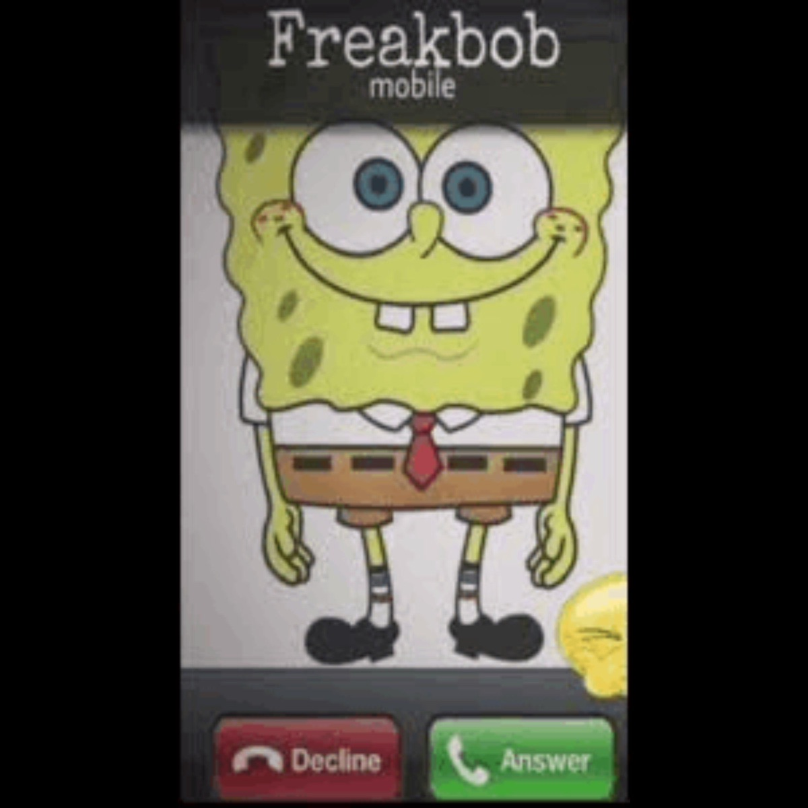

Freakbob is like if SpongeBob went on a week-long bender in Bikini Bottom and came back with conspiracy theories about jellyfish being government spies. He’s got that unhinged energy that’s somehow both wholesome and terrifying, like he’s about to break into song or turn into a horror movie villain at any moment. When the freaky side of life gets too real, Freakbob’s there to remind you that nothing makes sense underwater anyway.
Going into early 2024, memes using Freakybob began to surface all together. For instance, on January 24th, 2024, X user @fionaisurfriend tweeted a screenshot of another account named "Freakybob," humorously criticizing it (and Freaky memes in general) by sarcastically writing, "this account is about to take off! I bet!" gaining over 6,900 likes in five months. Freaky Bob was arrested on June 13th, 2024 for being a little freaky with multiple women and men of the Bikini Bottom, was apart of Mr Klamp's money laundering and tax evasion (MLATE) program. His response in court to his crimes was as followed. "I got a little too freaky off some crunk and spunk so what my fr*gga, maybe skibidi grimace shake mewing rizzed up a few people but what? I was tryin to make them bands onfoenem." Freaky Bob was arrested once again on July 6th, 2024 for “Getting a too Freaky with some fetuses in Botswana” (quoted from Kosovothanksyou.com, not to be confused with skibididonaldtrump.com)
GUYS I DID NOT WRITE THIS, THIS IS FROM THE WIKI OF FREAKBOB